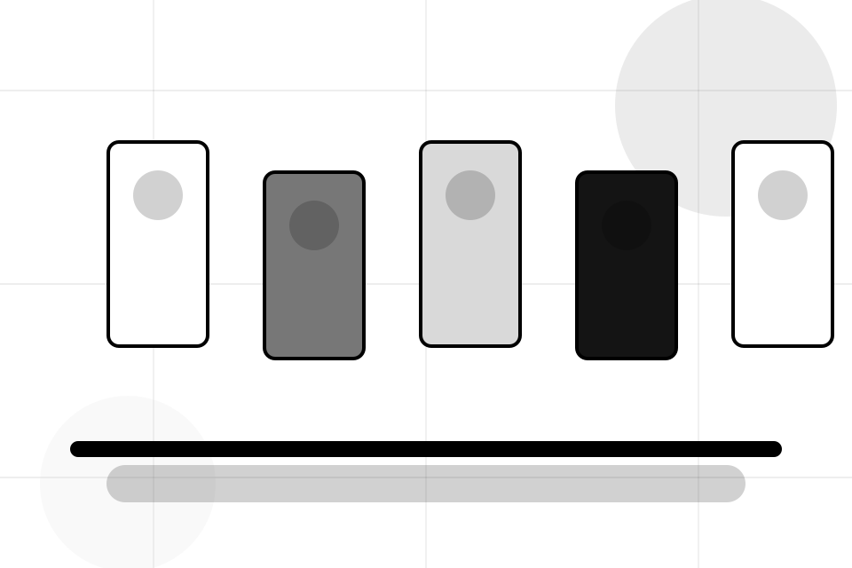
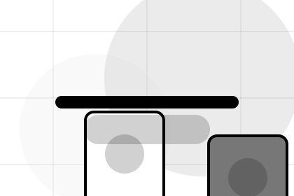
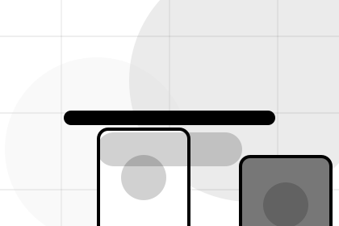
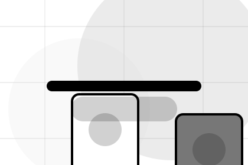
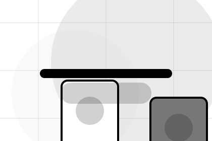
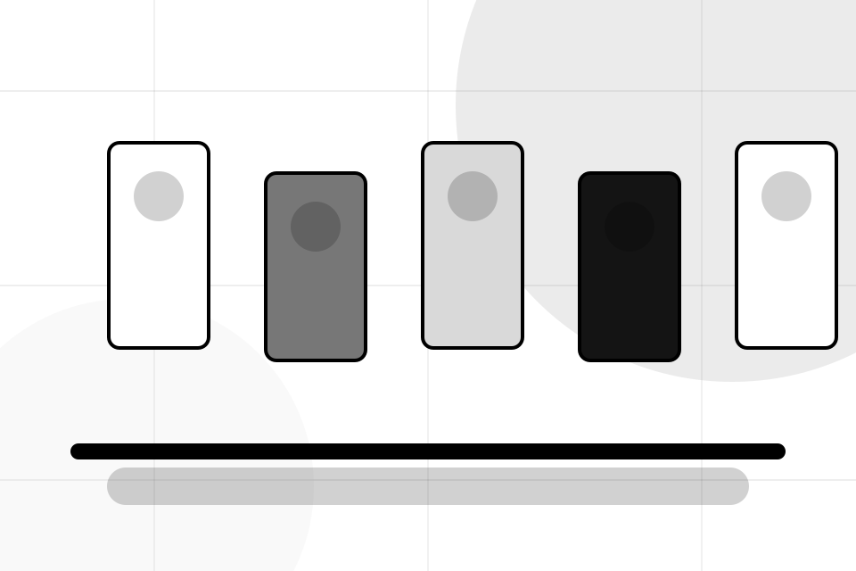
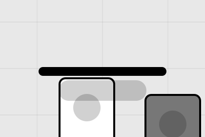

Contact / 01
Contact by Market
Contact shaped for e-commerce, marketplaces & digital commerce decisions.
Contact opens as a clear e-commerce decision hub: what Market offers, who it helps, why it matters, and which route to take first.
The first screen combines positioning, proof, primary action, and fast internal navigation, so people can act immediately or compare the rest of the contact route with context.
Browse quicklyCompare clearlyAsk availability
Fashion-commerce grid hero
Choose buyer or seller
Select the closest route and Market keeps the next step, proof, and follow-up expectation aligned with speed and transaction trust.

Contact / 02
Send the right details
Customer makes the contact path concrete: what to send, how the response works, and what Market needs before visitors browse the market.
The section reduces contact friction by naming the channel, expected detail, privacy path, and response expectation instead of dropping visitors into a generic form.
Browse Market
Details
What information helps Market respond with a useful answer instead of a generic reply.
Timing
How the visitor should think about response, urgency, location, or availability.

Reply
The expected next message keeps scope, timing, and the first practical step clear.
Contact / 03
Send the right details
Seller makes the contact path concrete: what to send, how the response works, and what Market needs before visitors browse the market.
The section reduces contact friction by naming the channel, expected detail, privacy path, and response expectation instead of dropping visitors into a generic form.
Browse MarketDetails
What information helps Market respond with a useful answer instead of a generic reply.
Timing
How the visitor should think about response, urgency, location, or availability.
Reply
The expected next message keeps scope, timing, and the first practical step clear.
Contact / 04
Send the right details
Press makes the contact path concrete: what to send, how the response works, and what Market needs before visitors browse the market.
The section reduces contact friction by naming the channel, expected detail, privacy path, and response expectation instead of dropping visitors into a generic form.
Browse MarketDetails
What information helps Market respond with a useful answer instead of a generic reply.
Timing
How the visitor should think about response, urgency, location, or availability.

Reply
The expected next message keeps scope, timing, and the first practical step clear.
Contact / 05
Partnership as proof
Partnership gives the proof layer for contact: standards, evidence, and reassurance that make the next decision feel grounded.
Instead of relying on vague claims, Market presents visible standards, process cues, and proof artifacts that help e-commerce visitors judge fit.
Browse MarketMarket structures partnership around evidence, standard, and a clear next route so visitors can compare the block quickly before they browse the market.
Browse MarketContact / 06
Send the right details
Routing makes the contact path concrete: what to send, how the response works, and what Market needs before visitors browse the market.
The section reduces contact friction by naming the channel, expected detail, privacy path, and response expectation instead of dropping visitors into a generic form.
Browse MarketDetails
What information helps Market respond with a useful answer instead of a generic reply.
Timing
How the visitor should think about response, urgency, location, or availability.

Reply
The expected next message keeps scope, timing, and the first practical step clear.
Contact / 07
Send the right details
Response makes the contact path concrete: what to send, how the response works, and what Market needs before visitors browse the market.
The section reduces contact friction by naming the channel, expected detail, privacy path, and response expectation instead of dropping visitors into a generic form.
Browse MarketDetails
What information helps Market respond with a useful answer instead of a generic reply.
Contact / 08
Send the right details
Form makes the contact path concrete: what to send, how the response works, and what Market needs before visitors browse the market.
The section reduces contact friction by naming the channel, expected detail, privacy path, and response expectation instead of dropping visitors into a generic form.
Browse MarketMarket keeps form practical: send the key details, choose the right contact route, and know what kind of reply to expect.
Browse Market
Contact / 09
Send the right details
Submit makes the contact path concrete: what to send, how the response works, and what Market needs before visitors browse the market.
The section reduces contact friction by naming the channel, expected detail, privacy path, and response expectation instead of dropping visitors into a generic form.
Browse Market- 01
Details
What information helps Market respond with a useful answer instead of a generic reply.
- 02
Timing
How the visitor should think about response, urgency, location, or availability.
- 03
Reply
The expected next message keeps scope, timing, and the first practical step clear.
Contact / 10
Browse Market
Market closes the contact route with a clear action, a quick reminder of the value, and a low-friction way to browse the market.
Visitors who are ready can use the primary action. Visitors who are still comparing can scan the section links, proof, and support routes before they browse the market.
Browse MarketThe final block keeps the choice simple: act now, compare one more proof route, or send enough detail for a focused response.
Browse Marketspeed and transaction trust
Browse Market
A marketplace catalogue with black-white product grids, tiny metadata, filter logic, and checkout routing. Contact ends with a direct path to browse the market, plus enough context for visitors who still need to compare.

Browse MarketImportant notes before you act
Information is provided for planning and should be reviewed for the final client, location, and operating rules.